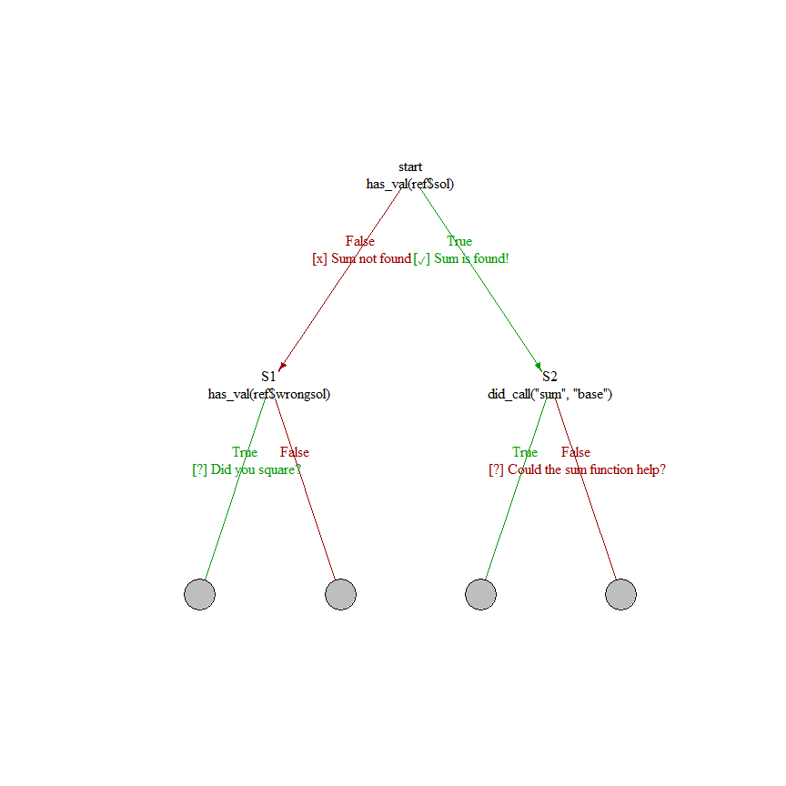

VeRitas allows for automated feedback on submitted code through a manually designed set of feedback rules. These rules consist of binary tests on the submitted code, based on the outcome of which feedback is shown and after which the code is sent to a next test.
Installation
You can install the development version of VeRitas with the following command (requires a functioning installation of the devtools package):
devtools::install_github("koenvanbenthem/VeRitas")Example
This is a basic example which shows you how to solve a common problem. Assume you have given students the assignment to add up the squares of the number 1 up to and including 5 (i.e. ).
Start by defining a reference implementation in the file ref1.R, that contains:
# Reference in file ref1.R
# available in examples/01-simplest
sol <- sum((1:5)^2)
wrongsol <- sum((1:5))The reference thus holds the correct solution, as well as a common wrong solution. We can now, as a teacher, construct a decision network to give feedback on student code. Essentially we construct a list of nodes, eacht of which takes five input arguments:
- The check that should be performed (can be one of has_val, has_each_val, did_call, has_vec)
- The node where the evaluator should move to next if the condition is true (goT)
- The node where the evaluator should move to next if the condition is false (goT)
- The message to display if the condition is true (doT)
- The message to display if the condition is false (doF)
Variables from the reference solution can be accessed through ref$varname.
library(VeRitas)
net <- list(start=node(has_val(ref$sol),
goT=S2,goF=S1,
doT="[✓] Sum is found!",
doF="[x] Sum not found"),
S1=node(has_val(ref$wrongsol),
goT=END,goF=END,
doT="[?] Did you square?"),
S2=node(did_call("sum","base"),
goT=END,goF=END,
doT="[?] Could the sum function help?")
)One can visualise the graph with help of the igraph function and the drawNet function wrapper provided in VeRitas:
library(igraph)
#> Warning: package 'igraph' was built under R version 4.4.3
drawNet(net,draw="static",layout=layout_as_tree,margin=0.3,
size=30,vertex.shape="none",vertex.label.color="black") Use draw=“interactive” to use igraph’s interactive plotting module. Now one can turn the decision network (net) and reference implementation together into an assignment.
MyAssignment <- prepareAssignment(net,"examples/01-simplest/ref1.R")If one has a file code1.R in the folder examples/01/simplets, that contains the following code:
1+2+3+4+5One can check it by running:
runSingle("examples/01-simplest/code1.R",MyAssignment)
#> [x] Sum not found
#>
#> [?] Did you square?